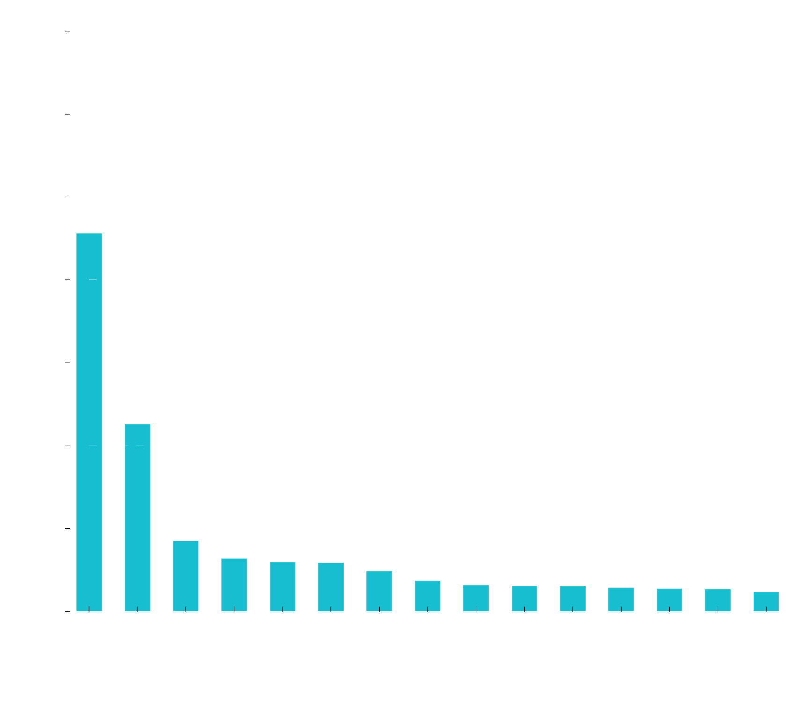

Random forests for a better than random classification of tree species based on hyperspectral and LiDAR data
By Yannic Fetik / yannic.fetik@web.de
Talking points:
- Bavarian Forest National Park
- Software
- Data
- Forests of randomized trees
- Results
Bavarian Forest National Park
- First Nationalpark in Germany
- Founded: 1970
- Enlarged: 1997
- Currently: 24.369 hectares
- 22 tree species
Software
All software used after preprocessing the hyperspectral data is open-source.
(And mostly Python)


Geospatial Data Abstraction Library (GDAL)
C /C++ Library for reading and writing raster and vector (OGR) geospatial data formats.
# Reproject raster
gdalwarp -t_srs "EPSG:4326" input.tif output.tif
# Extract data from a PostGis database to a GeoJSON file
ogr2ogr -f "GeoJSON" file.geojson PG:"host=localhost dbname=database" \
"user=user password=password" -sql "SELECT * from table_name"
SciPy
Is an open source Python library used for scientific computing and technical computing.
from scipy.signal import savgol_filter
import numpy as np
# scipy.signal.savgol_filter(x, window_length, polyorder)
x = np.array([2, 2, 5, 2, 1, 0, 1, 4, 9])
y = savgol_filter(x, 5, 2)
array([1.66, 3.17, 3.54, 2.86, 0.66, 0.17, 1., 4., 9.])
Includes: Numpy, pandas, Matplotlib...
scikit-learn
Is an open source Python library that implements a range of machine learning algorithms.
from sklearn.ensemble import RandomForestClassifier
import numpy as np
from sklearn import datasets
iris = datasets.load_iris()
clf = RandomForestClassifier(n_estimators=10)
clf.fit(iris.data, iris.target)
Data
Spectral data:
| Sensor | $$\text{Spectral range } (\mu m)$$ | Bands | |
| HySpex VNIR-1600 | 0.4 – 0.992 | 160 | |
| HySpex SWIR- 320m-e | 0.968 – 2.498 | 256 |
LiDAR data:
Based on data retrieved in July 2012 with a RIEGL LMS-Q 680 (30-40 points per m² ) and single trees have been segmented by Latifi, et al. (2015)
Data
| Spectral data | ||
|---|---|---|
| VNIR | SWIR | Vegetation indices |
| 131 Bands | 133 Bands | 9 Indices |
| LiDAR data | |
|---|---|
| DTM | Treecount |
| Elevation | Stem density |
Spectral data preprocessing:
- Raw data was processed using CATENA [Krauß, et al. (2013)]
- BRDF correction using BREFCOR [Schläpfer, et al. (2015)]
- Savitzky Golay filtering [Scipy]
- Brightness normalization [Feilhauer, et al. (2010)]
- Forest mask
Spectral training data

Vegetation indices
| Indices | Abbrevation | Formula |
|---|---|---|
| Cellulose Absorption Index | CAI | $$0.5 \times ( \lambda_{2005 \mu m} + \lambda_{2203 \mu m}) - \lambda_{2106 \mu m}$$ |
| Chlorophyll Index Green | CIG | $$\frac{ \lambda_{860 \mu m}}{ \lambda_{545 \mu m}} -1 $$ |
| Enhanced Vegetation Index | EVI | $$2.5\times {\frac {( \lambda_{800 \mu m}- \lambda_{660 \mu m})}{(\lambda_{800 \mu m}+6\times \lambda_{660 \mu m}-7.5\times \lambda_{480 \mu m}+1)}}$$ |
| Normalized Difference Lignin Index | NDLI | $$\frac{\left(log \frac{1}{\lambda_{1754 \mu m}}\right) - \left(log \frac{1}{\lambda_{1680 \mu m}}\right)}{\left(log \frac{1}{\lambda_{1754 \mu m}}\right) + \left(log \frac{1}{\lambda_{1680 \mu m}}\right)}$$ |
| Normalized Difference Leaf Mass (per area) | NDLma | $$\frac{ \lambda_{2260 \mu m} - \lambda_{1490 \mu m} }{ \lambda_{2260 \mu m} + \lambda_{1490 \mu m} }$$ |
| Normalized Difference Vegetation Index | NDVI | $$\frac{ \lambda_{858 \mu m} - \lambda_{649 \mu m} }{ \lambda_{858 \mu m} + \lambda_{649 \mu m} }$$ |
| Red Edge NDVI | RENDVI | $$\frac{ \lambda_{750 \mu m} - \lambda_{705 \mu m} }{ \lambda_{750 \mu m} + \lambda_{705 \mu m} }$$ |
| Red Edge Inflection Point | REIP | $$700+40 {\left(\frac{\frac{(\lambda_{670 \mu m}+\lambda_{780 \mu m})}{2} -\lambda_{700\mu m}}{\lambda_{740 \mu m}-\lambda_{700 \mu m}}\right)}$$ |
| Modified NDVI | mNDVI | $$\frac{ \lambda_{800 \mu m} - \lambda_{680 \mu m} }{ \lambda_{800 \mu m} + \lambda_{680 \mu m} - \lambda_{2445 \mu m}}$$ |
Training data
| Species | English | Abbrevation | Pixels |
|---|---|---|---|
| Abies alba | European silver fir | AA | 543 |
| Acer pseudoplatanus | Sycamore maple | AP | 371 |
| Alnus glutinosa | European alder | AG | 204 |
| Betula pendula | Silver birch | BP | 329 |
| Fagus sylvatica | European beech | FS | 1408 |
| Fraxinus excelsior | European ash | FE | 386 |
| Larix decidua | European larch | LD | 346 |
| Picea abies | Norway spruce | PA | 725 |
| Pinus mugo | Mountain pine | PMu | 237 |
| Populus tremula | European aspen | PT | 120 |
| Pseudotsuga menziesii | Douglas fir | PM | 106 |
| $$\sum \ \ 4775$$ |
Forests of randomized trees
Random forests form a family of methods that consist of building an ensemble ("forest") of decision trees.- Each tree in the ensemble is built from a sample drawn with replacement (bagging) from the training set
- At each node, the tree splits the data into two nodes
- For splitting, a random subset of attributes/features (random subwindow) is drawn.
- Splits are chosen from the subset of features using a splitting criterion (Gini criterion).
- Trees a grown in full, not pruned
- The scikit-learn implementation combines classifiers by averaging their probabilistic prediction, instead of letting each classifier vote for a single class.
Why use forests of randomized trees
- Easy to understand
- Only 2 hyperparameters to tune
- Robust against outliers
- Included feature importance measurement
- Out-of-bag error rate
- Embarrassingly parallel
Number of trees in forest
Size of the random subwindow
Feature importance
Two ways of computing feature importance for randomized forests:
Mean decrease in Accuracy (MDA)
Mean decrease in Impurity (MDI)
Mean decrease in Accuracy (MDA)
Randomly permuting the values of the feature and measuring the resulting increase in error.Strobl, et al. (2008) showed that MDA is biased, and that it overestimates the importance of correlated variables
Mean decrease in Impurity (MDI)
Calculates each feature importance as the sum over the number of splits (accross all tress) that include the feature, proportionaly to the number of samples it splits.Feature importance based on MDI is biased when using data of varying types or features have different numbers of categories variables [Strobl, et al. (2007)]
scikit-learn offers two basic types of forests of randomized trees:
Random Forest® [Breiman (2001)]
Extremely Randomized Trees [Geurts, et al. (2006)]
Intel(R) Core(TM) i7-6700K CPU @ 4.00GHz
Fitting:
RF: 3min 37s10min
ET: 0min 22.7s1min
5 Fold cross validation:
RF: 10min 30s
ET:1min 28s
Results
Evaluation based on Cohen's kappa and F1-scores:
$$\text{Kappa: }\kappa = (p_o - p_e) / (1 - p_e)$$
$$p_o \text{is the observed agreement ratio, and}$$ $$p_e\text{is the expected agreement.}$$
$$\text{F1 score: } \text{F1} = 2 \times \frac{\text{precision} \times \text{recall}}{\text{precision} + \text{recall}}$$
$$\text{precision} = \frac{tp}{tp + fp} \qquad \text{recall} = \frac{tp}{tp + fn}$$
| Actual | Class 1 |
True positive (tp) |
False positive (fp) |
|
| Class 2 |
False negative (fn) |
True negative (tn) |
||
| Class 1 | Class 2 | |||
| Predicted | ||||
F1-scores:
| Data | DTM | Kappa | AA | AP | AG | BP | FS | FE | LD | PA | PMu | PT | PM |
|---|---|---|---|---|---|---|---|---|---|---|---|---|---|
| all | True | 0.77 | 0.67 | 0.74 | 0.82 | 0.75 | 0.90 | 0.82 | 0.81 | 0.77 | 0.95 | 0.67 | 0.55 |
| all | False | 0.64 | 0.55 | 0.56 | 0.58 | 0.60 | 0.86 | 0.69 | 0.67 | 0.73 | 0.86 | 0.31 | 0.07 |
| specind | False | 0.58 | 0.56 | 0.29 | 0.48 | 0.55 | 0.80 | 0.64 | 0.63 | 0.65 | 0.88 | 0.59 | 0.14 |
| spectral | False | 0.55 | 0.46 | 0.24 | 0.47 | 0.36 | 0.77 | 0.64 | 0.59 | 0.69 | 0.92 | 0.36 | 0.08 |
| swir | False | 0.53 | 0.52 | 0.32 | 0.36 | 0.23 | 0.74 | 0.69 | 0.52 | 0.71 | 0.82 | 0.06 | 0.00 |
| swirfull | True | 0.80 | 0.77 | 0.74 | 0.85 | 0.81 | 0.88 | 0.88 | 0.85 | 0.83 | 0.96 | 0.74 | 0.45 |
| swirfull | False | 0.63 | 0.49 | 0.54 | 0.67 | 0.64 | 0.85 | 0.74 | 0.64 | 0.66 | 0.91 | 0.47 | 0.07 |
| vnir | False | 0.46 | 0.37 | 0.27 | 0.44 | 0.29 | 0.76 | 0.48 | 0.53 | 0.52 | 0.86 | 0.28 | 0.07 |
| vnirfull | True | 0.77 | 0.71 | 0.82 | 0.82 | 0.74 | 0.90 | 0.81 | 0.80 | 0.76 | 0.95 | 0.72 | 0.65 |
| vnirfull | False | 0.62 | 0.47 | 0.55 | 0.56 | 0.65 | 0.83 | 0.65 | 0.63 | 0.70 | 0.88 | 0.53 | 0.19 |
Results
Validation based on spatial distribution and overall percentages:
SWIR + Spectral indices + LiDAR (swirfull)
SWIR + Spectral indices + LiDAR (swirfull)
VNIR + SWIR + Spectral indices + LiDAR (all)
VNIR + SWIR + Spectral indices + LiDAR (all)
SWIR
SWIR
SWIR normalized confusion matrix

Additional problems
BRDF correctionPicture showing maximum probability for pixel